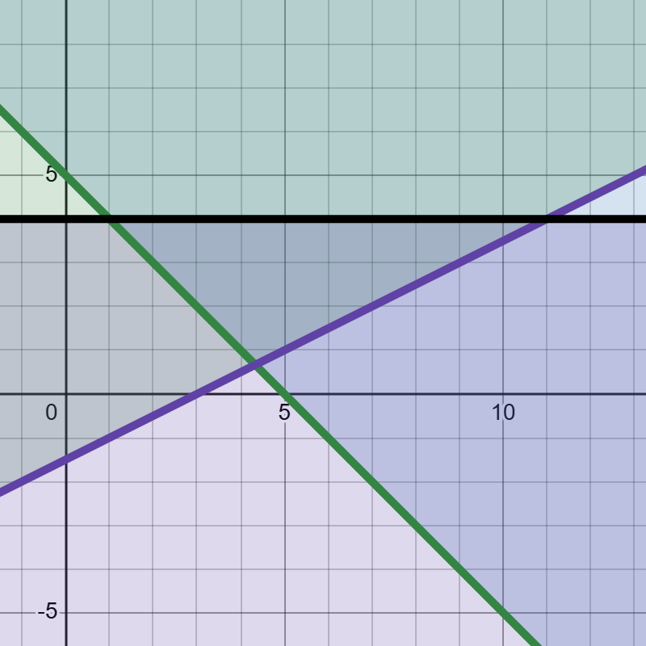
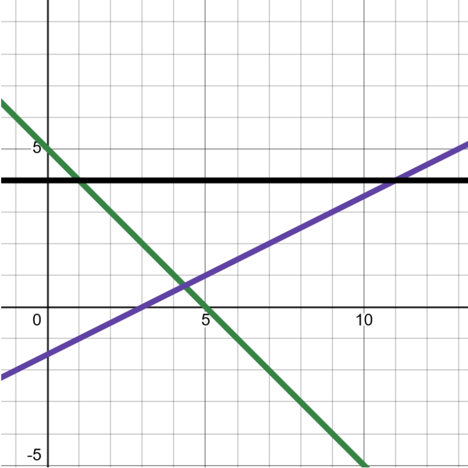
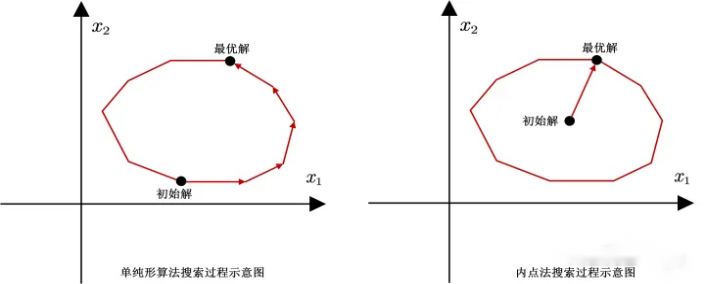

线性规划的基本形式可以从中学线性规划演变过来。中学的线性规划（解线性方程组）往往变量较少，适合手算。这里就给出了一些常见了线性规划题目，在一些有棱有角的可行域中，搜索符合题目的答案，这些答案往往容易出现在顶点
回忆一道高中的线性规划题目
若实数 ， 满足下列条件：
则 的最小值是多少？
直接用desmos渲染：
高中线性规划【demo】 | Desmos高中用手画图的方法   图中颜色最深的三角形，便是三个约束条件的重叠部分，也就是这道题的可行域了。 中学阶段，通常是动手画出3个约束条件的边界线，然后在根据不等号确定可行域 与 截距
我们把 z 当成一个参数，所以看似是“三维平面”的 ，就可以转为一条直线。如同视频所示，改变z的值，这条直线就在平面上移动——我们可以轻易地发现，在顶点处，z取得了最小值。如果觉得难以理解z和截距，可以看看下面的解释：
可以变形成 ，可能比较符合习惯。对比一下
我们习惯把这里面的 称为（y轴的）截距。所以如果要让z值最小（ ），我们就是让截距（ ）最小。
线性规划的基本形式
马老师的教程已经说明了中学线性规划的局限性：它只能描述简单的几个自变量（决策变量）的关系，一旦问题变得复杂，就无法使用画图找顶点的方法，或者手动求解方程组的方法了。
下面我们从三个层面展示线性规划问题的形式演进：
| 高中简单化问题 | → | 实际生产规模化问题 | → | 线性代数简写形式 |
|---|---|---|---|---|
| 2~3 个变量 | 个变量（ 很大） | 向量 |
| 类型 | 目标函数 | 约束条件：等式 | 约束条件：不等式 |
|---|---|---|---|
| 高中例题 | （我们的立体中无等式约束） | ||
| 实际生产 | |||
| 线代表示 | 或者 |
Note
所以，我们可以将线性规划问题统一表示为如下形式：
不等式约束转化为等式约束
我们上面写的线性规划问题的形式，是为了“迎合”MATLAB等求解器的偏好而设置的。其实不管是最大化还是最小化，本质上都可以属于线性规划问题。经典的凸优化教材就会把上面的标准形式写成另外一种格式：
上面的这个式子就用变成了求解x的最大值。而且注意，这里的 不见了，它其实“缩到了”等式约束条件的里面。对于一个不等式 ，或者更一般地，，左边比右边更小，但是小多少呢？不知道，但是可以用一个参数 来表示这个差额，这样就变成了等式： ，或者说 。这样我们就实现了从不等式到等式的转变，把不等关系和等式关系统一为等式关系，方便求解。这个参数 ，就是松弛变量（Slack Variables）。
还记得前面那道中学数学难度的线性规划题目吗？拿它来举例子：
| 未加入松弛变量 | 加入松弛变量 | |
|---|---|---|
| -》 |
单纯形法（Simplex Method）
线性规划中最经典、最常用的求解算法，由美国数学家乔治·丹齐格于1947年提出
从三角形到多边形，再到凸多面体
前面我们学习到的线性约束组成了一个三角形。如果我们增加更多的线性约束，那么它（可行域）可能就会变成一个多边形。那如果是决策变量有三个呢？那么每一个约束条件（注意我们这里讲的是线性规划），就会在三维的空间中直直地切一刀，并且告诉你——我要的是“左边”还是“右边”，那么，我们最终就会切出来（约束出来）一个多面体的可行域。
也就是说，这些高维的（决策变量数量比较多）线性约束，最终会共同形成一个“多面体”的可行域。而且切出来的结果必然只能是一个“凸”的多面体
我们所要介绍的单纯形法（Simplex Method）的思想，可以从高中做题的“找三角形的顶点”中自然地衍生出来——它的核心思想就是沿着可行域的这个多面体的边，一步一步地走，一个一个顶点地尝试，直到找到最优解。
所以这个方法的一个重要的假设就是：最优解一定出现在“顶点”上，而不是内部。
单纯形法（Simplex Method）设想的“解决对象”的可行域应该长得如同这样：
或者说：
我们可以用比较正式的语言总结一下单纯形法：
单纯形法的基本原理
- 几何解释：在n维空间中，线性约束形成的可行域是一个凸多面体，最优解必然在某个顶点（极点）上
- 代数方法：通过基变量和非基变量的转换，从一个基本可行解移动到另一个更好的基本可行解
- 迭代过程：每次迭代选择一个能使目标函数改善最快的方向，直到无法再改进为止
当然，我们前面讲的 不等式约束转化为等式约束 的思想在这里也起到了作用，在单纯形法中一般也会把不等式约束条件，通过松弛变量转化成等式约束条件。
内点法（Interior Point Method）
单纯形法沿着多面体的边界，遍历所有的节点，最终得到一个最优解。当我们选择的初始点离最优解很远的时候，单纯形法就需要走过很长的路径，才能到达最优解所在的顶点。
内点法（Interior Point Method）则采取完全不同的策略：它从可行域的内部出发，沿着一条穿过内部的路径，直接逼近最优解。
如同马老师的教程中的图： 